library(tidyverse)
library(ggplot2)
library(readxl)
library(lubridate)
library(here)
knitr::opts_chunk$set(echo = TRUE, warning=FALSE, message=FALSE)Challenge Overview
Today’s challenge is to:
- create at least one graph including time (evolution)
- try to make them “publication” ready (optional)
- Explain why you choose the specific graph type
- Create at least one graph depicting part-whole or flow relationships
- try to make them “publication” ready (optional)
- Explain why you choose the specific graph type
This data set runs from the first quarter of 2003 to the second quarter of 2021, and includes quarterly measures of the total amount of household debt associated with 6 different types of loans - mortgage,HE revolving, auto, credit card, student, and other - plus a total household debt including all 6 loan types. This is another fantastic macroeconomic data product from the New York Federal Reserve. See Challenge 4.
debt_orig<-here("posts","_data","debt_in_trillions.xlsx") %>%
read_excel()
debt_orig# A tibble: 74 × 8
`Year and Quarter` Mortgage `HE Revolving` `Auto Loan` `Credit Card`
<chr> <dbl> <dbl> <dbl> <dbl>
1 03:Q1 4.94 0.242 0.641 0.688
2 03:Q2 5.08 0.26 0.622 0.693
3 03:Q3 5.18 0.269 0.684 0.693
4 03:Q4 5.66 0.302 0.704 0.698
5 04:Q1 5.84 0.328 0.72 0.695
6 04:Q2 5.97 0.367 0.743 0.697
7 04:Q3 6.21 0.426 0.751 0.706
8 04:Q4 6.36 0.468 0.728 0.717
9 05:Q1 6.51 0.502 0.725 0.71
10 05:Q2 6.70 0.528 0.774 0.717
# ℹ 64 more rows
# ℹ 3 more variables: `Student Loan` <dbl>, Other <dbl>, Total <dbl>debt<-debt_orig%>%
mutate(date = parse_date_time(`Year and Quarter`,
orders="yq"))Time Dependent Visualization
Lets look at how debt changes over time.
ggplot(debt, aes(x=date, y=Total)) +
geom_point()
ggplot(debt, aes(x=date, y=Total)) +
geom_point() +
geom_line()+
scale_y_continuous(limits=c(1,max(debt$Total)),labels = scales::label_number(suffix = " Trillion"))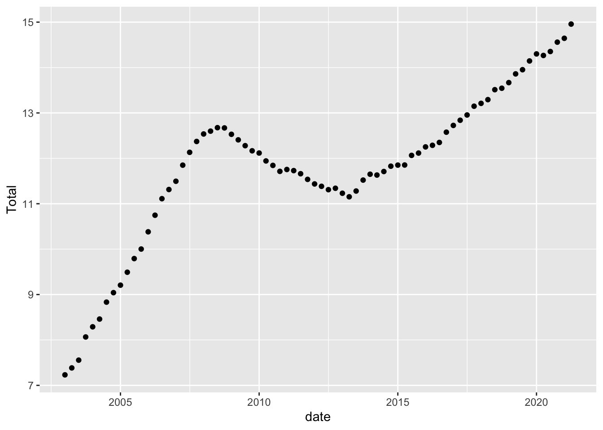
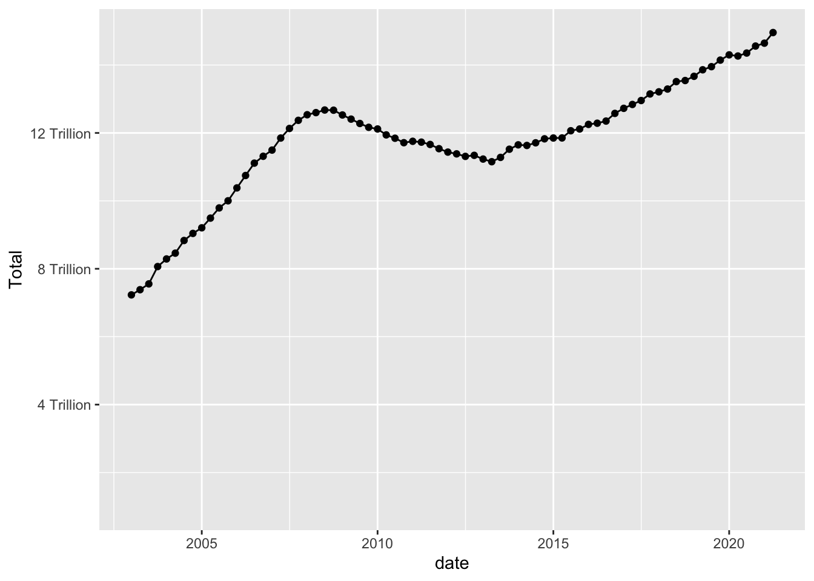
Visualizing Part-Whole Relationships
One thing to note is that it isn’t easy to include multiple lines on a single graph, that is because our data are not pivoted. Here is an example of how pivoting into tidy format makes things super easy.
debt_long<-debt%>%
pivot_longer(cols = Mortgage:Other,
names_to = "Loan",
values_to = "total")%>%
select(-Total)%>%
mutate(Loan = as.factor(Loan))
ggplot(debt_long, aes(x=date, y=total, color=Loan)) +
geom_point(size=.5) +
geom_line() +
theme(legend.position = "right") +
scale_y_continuous(labels = scales::label_number(suffix = " Trillion"))
ggplot(debt_long, aes(x=date, y=total, fill=Loan)) +
geom_bar(position="stack", stat="identity") +
scale_y_continuous(labels = scales::label_number(suffix = " Trillion"))+
theme(legend.position = "top") +
guides(fill = guide_legend(nrow = 1)) +
scale_fill_discrete(labels =
str_replace(levels(debt_long$Loan), " ", "\n"))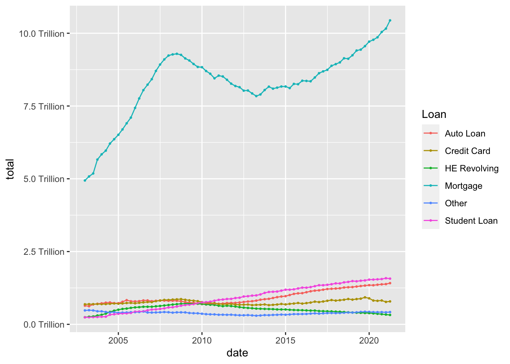
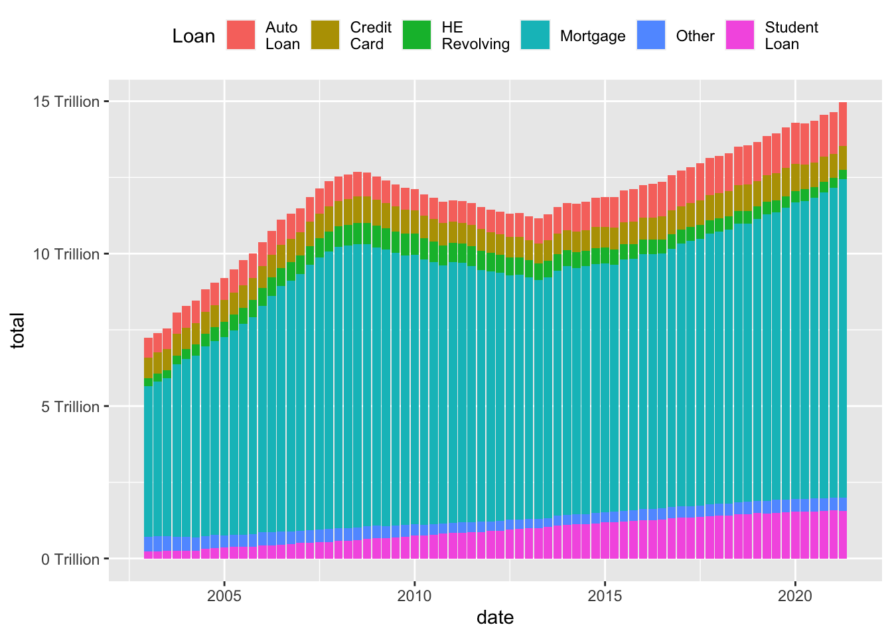
While the stacked chart might be easier to read in some respects, it is harder to follow individual trend lines. One solution is to reorder in order to preserve as much information as possible.
debt_long<-debt_long%>%
mutate(Loan = fct_relevel(Loan, "Mortgage",
"Auto Loan","HE Revolving", "Student Loan",
"Credit Card","Other"))
ggplot(debt_long, aes(x=date, y=total, fill=Loan)) +
geom_bar(position="stack", stat="identity") +
scale_y_continuous(labels = scales::label_number(suffix = " Trillion"))+
theme(legend.position = "top") +
guides(fill = guide_legend(nrow = 1)) +
scale_fill_discrete(labels=
str_replace(levels(debt_long$Loan), " ", "\n"))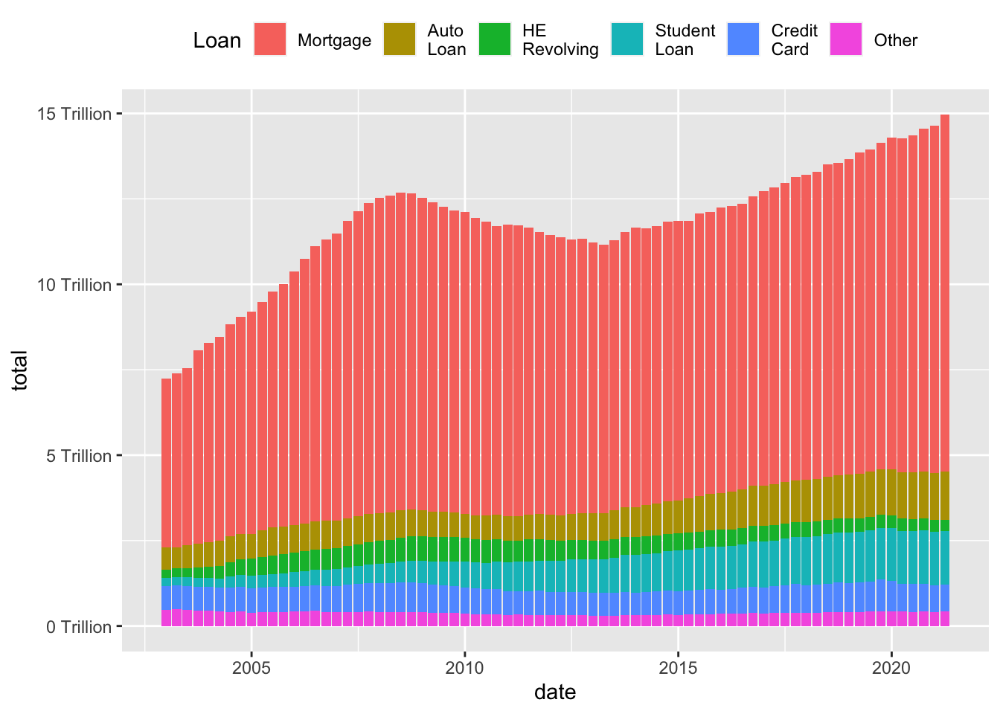
This data set runs from July 1954 to March 2017, and includes daily macroeconomic indicators related to the effective federal funds rate - or the interest rate at which banks lend money to each other in order to meet mandated reserve requirements. There are 7 variables besides the date: 4 values related to the federal funds rate (target, upper target, lower target, and effective), 3 are related macroeconomic indicators (inflation, GDP change, and unemployment rate.)
fed_rates_vars<-here("posts","_data","FedFundsRate.csv") %>%
read_csv(n_max = 1,
col_names = NULL)%>%
select(-c(X1:X3))%>%
unlist(.)
names(fed_rates_vars) <-c("fed_target", "fed_target_upper",
"fed_target_lower", "fed_effective",
"gdp_ch", "unemploy", "inflation")
fed_rates_orig<-here("posts","_data","FedFundsRate.csv") %>%
read_csv(skip=1,
col_names = c("Year", "Month", "Day",
names(fed_rates_vars)))
fed_rates<-fed_rates_orig%>%
mutate(date = make_date(Year, Month, Day))%>%
select(-c(Year, Month, Day))
fed_rates <- fed_rates%>%
pivot_longer(cols=-date,
names_to = "variable",
values_to = "value")
fed_rates# A tibble: 6,328 × 3
date variable value
<date> <chr> <dbl>
1 1954-07-01 fed_target NA
2 1954-07-01 fed_target_upper NA
3 1954-07-01 fed_target_lower NA
4 1954-07-01 fed_effective 0.8
5 1954-07-01 gdp_ch 4.6
6 1954-07-01 unemploy 5.8
7 1954-07-01 inflation NA
8 1954-08-01 fed_target NA
9 1954-08-01 fed_target_upper NA
10 1954-08-01 fed_target_lower NA
# ℹ 6,318 more rowsNow we can try to visualize the data over time, with care paid to missing data.
fed_rates%>%
filter(str_starts(variable, "fed"))%>%
ggplot(., aes(x=date, y=value, color=variable))+
geom_line()+
scale_y_continuous(labels = scales::label_percent(scale = 1))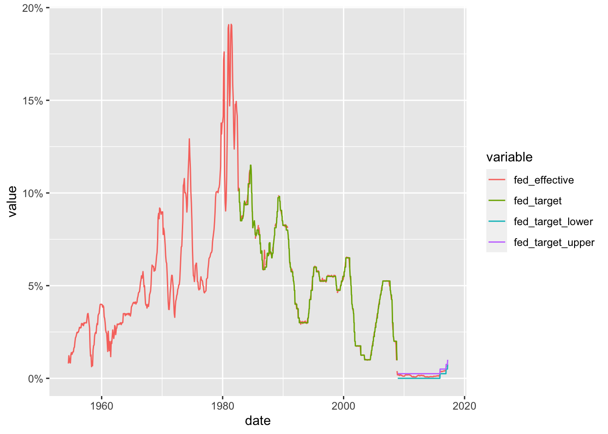
We can now see how closely the effective rate adheres to the target rate (and can see how the Fed changed the way it set it target rate around the time of the 2009 financial crash). Can we find out more by comparing the effective rate to one of the other macroeconomic indicators?
fed_rates%>%
filter(variable%in%c("fed_effective", "gdp_ch",
"unemploy", "inflation"))%>%
ggplot(., aes(x=date, y=value, color=variable))+
geom_point(size=0)+
geom_line()+
facet_grid(rows = vars(variable))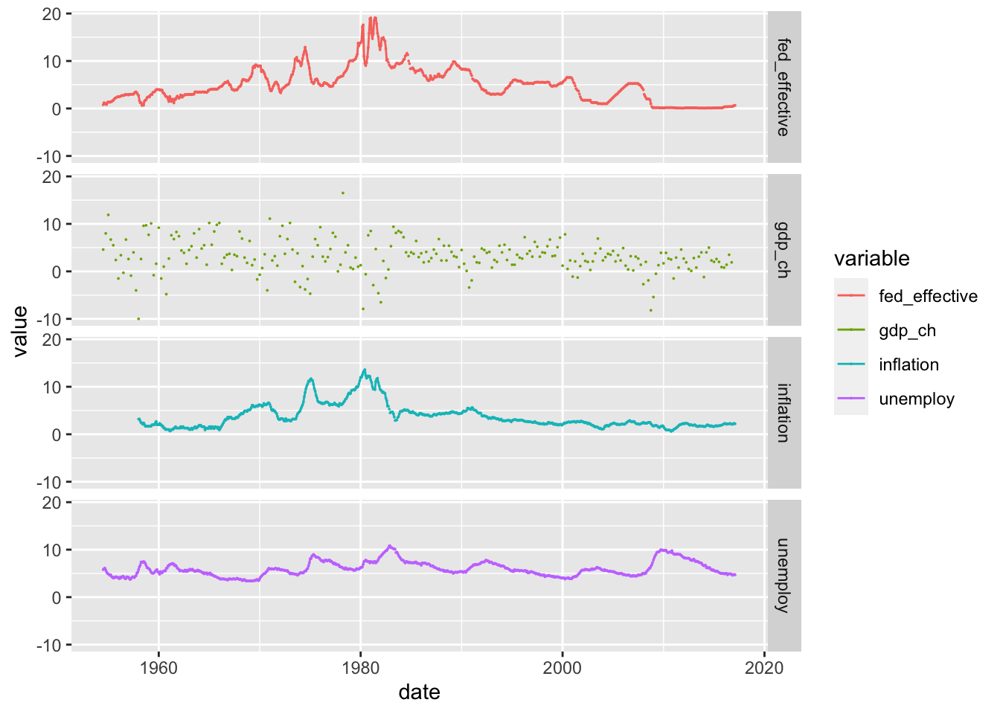
year_unemploy <- fed_rates %>%
pivot_wider(names_from = variable, values_from = value) %>%
mutate(year=year(date)) %>%
group_by(year) %>%
summarise(median_rate=median(unemploy,na.rm=T)/100) %>%
ungroup()
year_unemploy# A tibble: 64 × 2
year median_rate
<dbl> <dbl>
1 1954 0.0575
2 1955 0.0425
3 1956 0.0415
4 1957 0.042
5 1958 0.069
6 1959 0.054
7 1960 0.0545
8 1961 0.068
9 1962 0.0555
10 1963 0.0565
# ℹ 54 more rowsyear_unemploy %>%
ggplot(aes(year,median_rate))+
geom_line()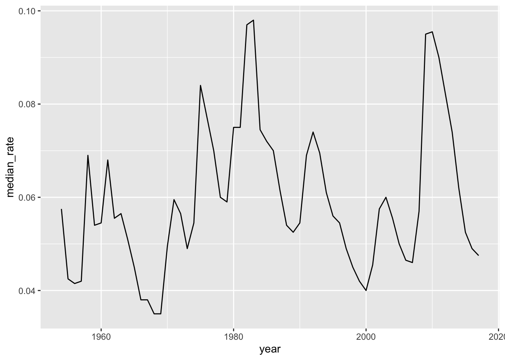
year_unemploy %>%
filter(year<=1981) %>%
ggplot(aes(year,median_rate))+
geom_line()+
scale_y_continuous(labels=scales::percent_format(),limits=c(0,.1))+
scale_x_continuous(breaks=seq(1955,1980,5))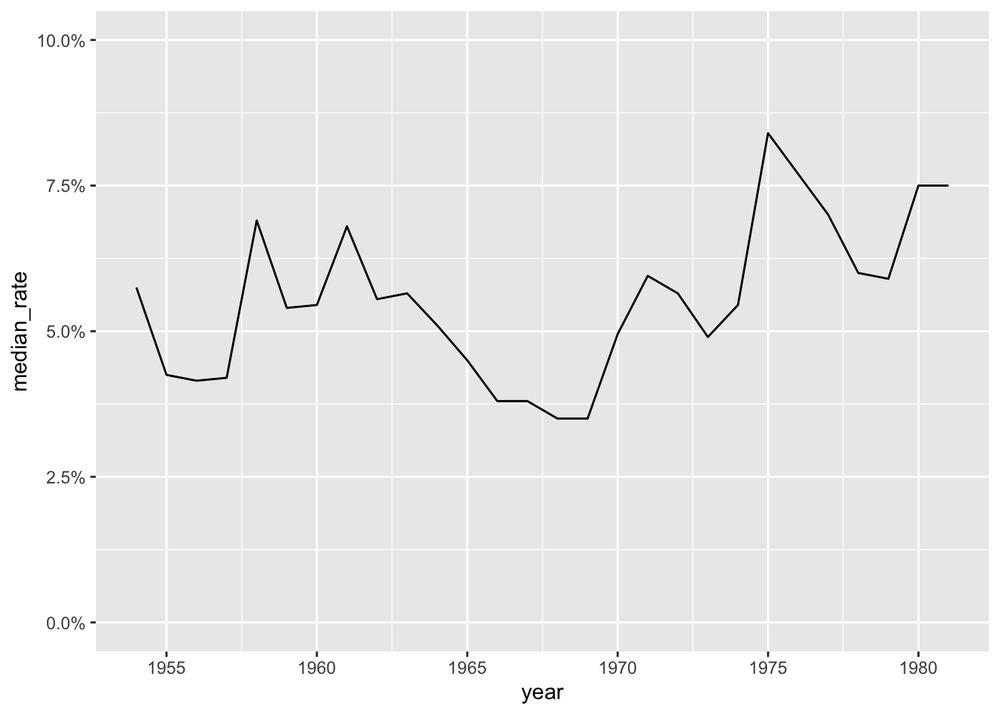
labs(x="year",y="median unemployment rate")$x
[1] "year"
$y
[1] "median unemployment rate"
attr(,"class")
[1] "labels"income_brackets <- c(i1 = "Under $15,000",
i2 = "$15,000 to $24,999",
i3 = "$25,000 to $34,999",
i4= "$35,000 to $49,999",
i5 = "$50,000 to $74,999",
i6 = "$75,000 to $99,999",
i7 = "$100,000 to $149,999",
i8 = "$150,000 to $199,999",
i9 = "$200,000 and over")
ushh_orig <- here("posts","_data","USA Households by Total Money Income, Race, and Hispanic Origin of Householder 1967 to 2019.xlsx") %>%
read_excel(skip=5,
n_max = 352,
col_names = c("year", "hholds", "del",
str_c("income",1:9,sep="_i"),
"median_inc", "median_se",
"mean_inc","mean_se"))%>%
select(-del)
ushh_orig # A tibble: 352 × 15
year hholds income_i1 income_i2 income_i3 income_i4 income_i5 income_i6
<chr> <chr> <dbl> <dbl> <dbl> <dbl> <dbl> <dbl>
1 ALL RACES <NA> NA NA NA NA NA NA
2 2019 128451 9.1 8 8.3 11.7 16.5 12.3
3 2018 128579 10.1 8.8 8.7 12 17 12.5
4 2017 2 127669 10 9.1 9.2 12 16.4 12.4
5 2017 127586 10.1 9.1 9.2 11.9 16.3 12.6
6 2016 126224 10.4 9 9.2 12.3 16.7 12.2
7 2015 125819 10.6 10 9.6 12.1 16.1 12.4
8 2014 124587 11.4 10.5 9.6 12.6 16.4 12.1
9 2013 3 123931 11.4 10.3 9.5 12.5 16.8 12
10 2013 4 122952 11.3 10.4 9.7 13.1 17 12.5
# ℹ 342 more rows
# ℹ 7 more variables: income_i7 <dbl>, income_i8 <dbl>, income_i9 <dbl>,
# median_inc <dbl>, median_se <dbl>, mean_inc <chr>, mean_se <chr>ushh_id<-ushh_orig%>%
mutate(identity = case_when(
str_detect(year, "[[:alpha:]]") ~ year,
TRUE ~ NA_character_
))%>%
fill(identity)%>%
filter(!str_detect(year, "[[:alpha:]]"))
ushh_id<-ushh_id%>%
separate(year, into=c("year", "delete"), sep=" ")%>%
mutate(identity = str_remove(identity, " [0-9]+"),
across(any_of(c("hholds", "mean_inc", "mean_se", "year")),
as.numeric))%>%
select(-delete)
ushh_id# A tibble: 340 × 16
year hholds income_i1 income_i2 income_i3 income_i4 income_i5 income_i6
<dbl> <dbl> <dbl> <dbl> <dbl> <dbl> <dbl> <dbl>
1 2019 128451 9.1 8 8.3 11.7 16.5 12.3
2 2018 128579 10.1 8.8 8.7 12 17 12.5
3 2017 127669 10 9.1 9.2 12 16.4 12.4
4 2017 127586 10.1 9.1 9.2 11.9 16.3 12.6
5 2016 126224 10.4 9 9.2 12.3 16.7 12.2
6 2015 125819 10.6 10 9.6 12.1 16.1 12.4
7 2014 124587 11.4 10.5 9.6 12.6 16.4 12.1
8 2013 123931 11.4 10.3 9.5 12.5 16.8 12
9 2013 122952 11.3 10.4 9.7 13.1 17 12.5
10 2012 122459 11.4 10.6 10.1 12.5 17.4 12
# ℹ 330 more rows
# ℹ 8 more variables: income_i7 <dbl>, income_i8 <dbl>, income_i9 <dbl>,
# median_inc <dbl>, median_se <dbl>, mean_inc <dbl>, mean_se <dbl>,
# identity <chr>ushh <-ushh_id%>%
mutate(gp_identity = case_when(
identity %in% c("BLACK", "BLACK ALONE") ~ "gp_black",
identity %in% c("ASIAN ALONE OR IN COMBINATION",
"ASIAN AND PACIFIC ISLANDER") ~ "gp_asian",
identity %in% c("WHITE, NOT HISPANIC",
"WHITE ALONE, NOT HISPANIC") ~ "gp_white",
identity %in% c("HISPANIC (ANY RACE)") ~ "gp_hisp",
identity %in% c("ALL RACES") ~ "gp_all"
))%>%
filter(!is.na(gp_identity))%>%
group_by(year, gp_identity)%>%
summarise(across(c(starts_with("inc"),starts_with("me"),
"hholds"),
~median(.x, na.rm=TRUE)))%>% # sort of cheating - getting median of a median?
ungroup()ushh %>%
filter(gp_identity=="gp_all") %>%
ggplot(aes(year,median_inc))+
geom_line()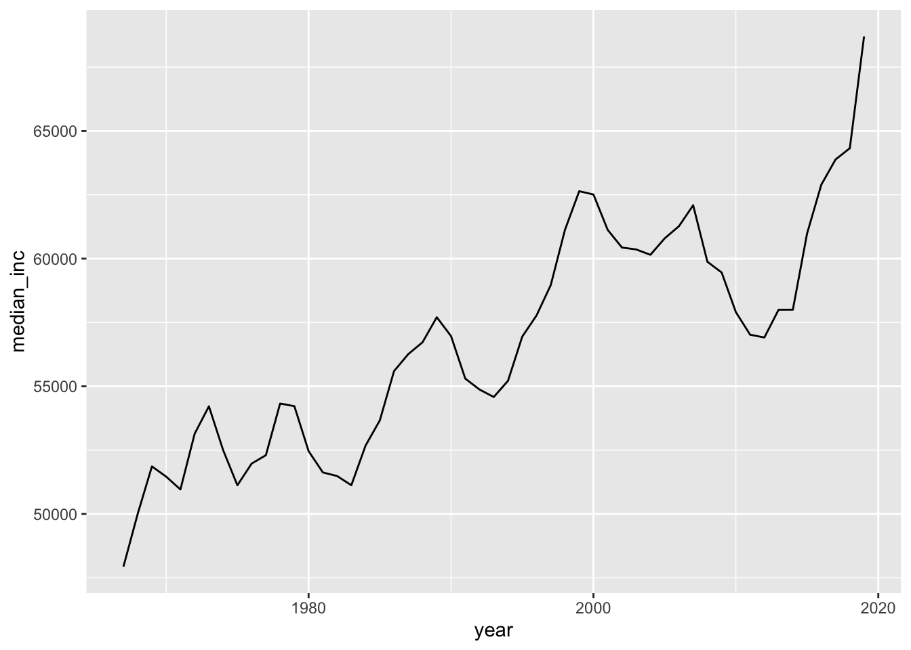
ushh %>%
filter(gp_identity!="gp_all") %>%
mutate(gp_identity=str_remove(gp_identity,"gp_"))%>%
ggplot(aes(year,median_inc,col=gp_identity))+
geom_line()+
scale_x_continuous(limits=c(min(ushh$year),max(ushh$year)),
breaks=seq(min(ushh$year),max(ushh$year),by=10))+
scale_y_continuous(labels = scales::dollar_format())+
scale_color_discrete(name="identity")+
labs(x="year",y="median income")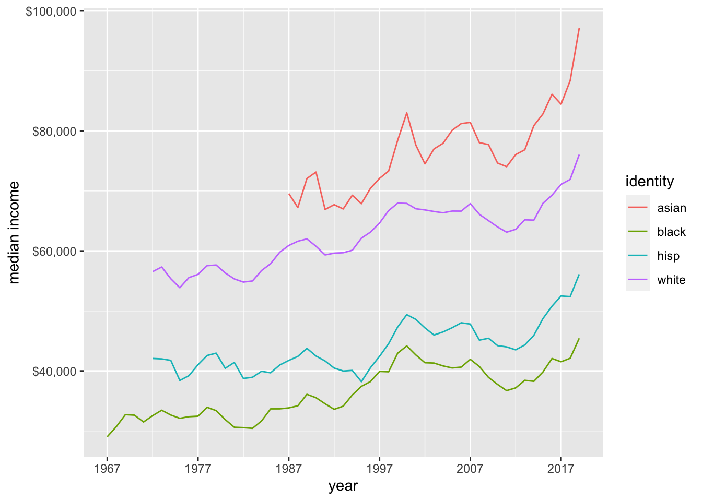
bookings_orig<- here("posts","_data","hotel_bookings.csv") %>%
read_csv()
bookings<-bookings_orig%>%
mutate(date_arrival = str_c(arrival_date_day_of_month,
arrival_date_month,
arrival_date_year, sep="/"),
date_arrival = dmy(date_arrival))%>%
select(-starts_with("arrival"))bookings_cumul <- bookings %>%
group_by(date_arrival) %>%
summarise(n=n()) %>%
ungroup() %>%
mutate(n_cumul=cumsum(n))
bookings_cumul# A tibble: 793 × 3
date_arrival n n_cumul
<date> <int> <int>
1 2015-07-01 122 122
2 2015-07-02 93 215
3 2015-07-03 56 271
4 2015-07-04 88 359
5 2015-07-05 53 412
6 2015-07-06 75 487
7 2015-07-07 54 541
8 2015-07-08 69 610
9 2015-07-09 80 690
10 2015-07-10 51 741
# ℹ 783 more rowsggplot(bookings_cumul, aes(date_arrival,n_cumul))+
geom_line()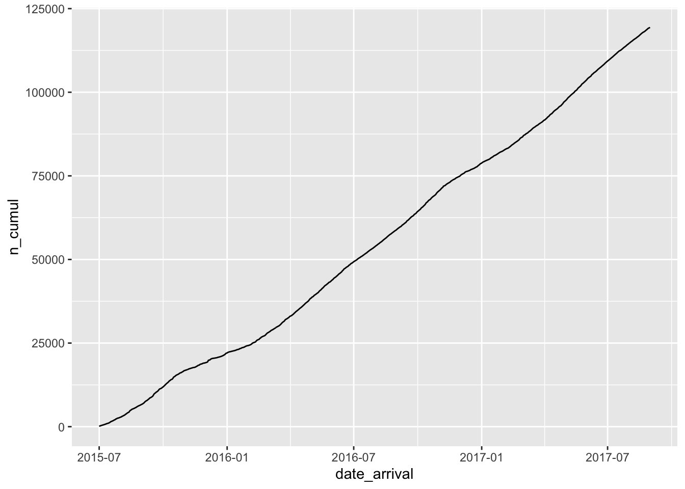
bookings_month_n <- bookings %>%
mutate(month=floor_date(date_arrival,unit="month")) %>%
group_by(month) %>%
summarise(n=n()) %>%
ungroup()
bookings_month_n# A tibble: 26 × 2
month n
<date> <int>
1 2015-07-01 2776
2 2015-08-01 3889
3 2015-09-01 5114
4 2015-10-01 4957
5 2015-11-01 2340
6 2015-12-01 2920
7 2016-01-01 2248
8 2016-02-01 3891
9 2016-03-01 4824
10 2016-04-01 5428
# ℹ 16 more rowsbookings_month_n %>%
ggplot(aes(month,n))+
geom_line()+
scale_x_date(NULL, date_labels = "%b %y",breaks="2 months")+
scale_y_continuous(limits=c(0,7000))+
labs(x="date",y="number of bookings")+
theme(axis.text.x=element_text(angle=90))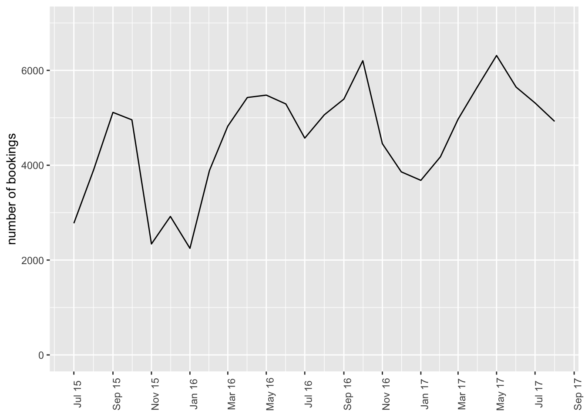
bookings_month_hotel_n <- bookings %>%
mutate(month=floor_date(date_arrival,unit="month")) %>%
group_by(month, hotel) %>%
summarise(n=n()) %>%
ungroup()
bookings_month_hotel_n# A tibble: 52 × 3
month hotel n
<date> <chr> <int>
1 2015-07-01 City Hotel 1398
2 2015-07-01 Resort Hotel 1378
3 2015-08-01 City Hotel 2480
4 2015-08-01 Resort Hotel 1409
5 2015-09-01 City Hotel 3529
6 2015-09-01 Resort Hotel 1585
7 2015-10-01 City Hotel 3386
8 2015-10-01 Resort Hotel 1571
9 2015-11-01 City Hotel 1235
10 2015-11-01 Resort Hotel 1105
# ℹ 42 more rowsbookings_month_hotel_n %>%
ggplot(aes(month,n,col=hotel))+
geom_line()+
scale_x_date(NULL, date_labels = "%b %y",breaks="2 months")+
scale_y_continuous(limits=c(0,5000))+
labs(x="date",y="number of bookings")+
theme(axis.text.x=element_text(angle=90))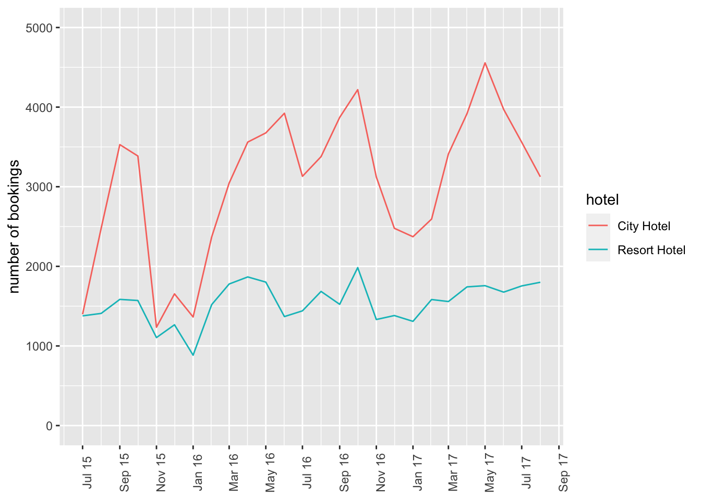